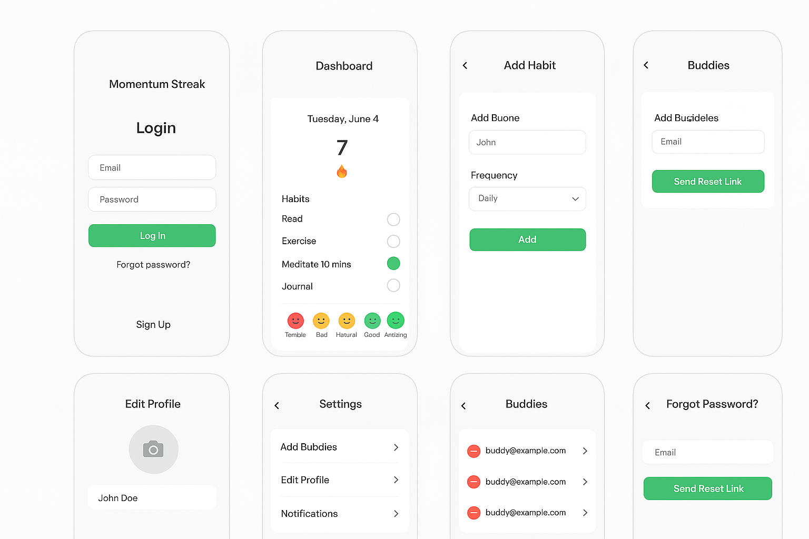

Client Mobile Platform
Cross-platform app delivery with Flutter, Firebase auth, analytics, push notifications, and production release support.
View case studySenior Mobile App Developer
I build production-ready Flutter, iOS, Firebase, and automation solutions for founders, teams, and businesses that need software to move work forward.
Selected Work
Cross-platform app delivery with Flutter, Firebase auth, analytics, push notifications, and production release support.
View case studyDashboard and automation flows that reduce repeated admin tasks and keep teams aligned across mobile and web.
Explore scripts
SwiftUI habit tracking app with persistence, widgets, streak logic, and a polished daily progress experience.
View case study
n8n workflow that auto-publishes content across 10+ platforms — built by reverse-engineering APIs that don't officially exist.
View case studyTrusted Delivery
I work with startups, small businesses, consultants, and product owners who need dependable engineering across app builds, integrations, migrations, and technical rescue work.
Booking systems, dashboards, customer apps, and internal tools.
Farm management, record keeping, reporting, and offline-first workflows.
MVP planning, mobile launches, Firebase backends, and iteration after release.
Clear communication, milestone delivery, and support through Fiverr and direct work.
Automation Scripts
Generate daily, weekly, or monthly PDF and spreadsheet reports from app data.
Send scheduled app, email, or SMS reminders for customers and operations teams.
Keep Firebase, APIs, spreadsheets, and dashboards synced with reliable background jobs.
One-click tools for imports, exports, cleanup tasks, and repeated support workflows.
Writing
Publish your own articles after signup or login. Articles are saved in this browser for a GitHub Pages-friendly demo.